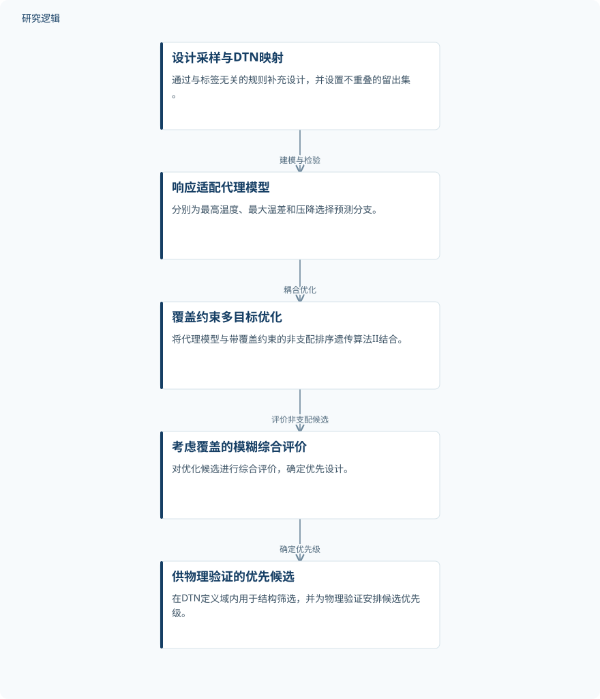

摘要解读
面向电动汽车电池热管理系统结构优化的热工水力机器学习代理建模
Thermal-Hydraulic Machine-Learning Surrogate Modeling for Structural Optimization of an Electric-Vehicle Battery Thermal Management System
解读更新 2026-11-13 09:20 · 依据公开摘要整理，未核验全文细节
电动汽车电池热管理结构优化，需要同时预测最高温度、最大温差和压降，但这些响应并不适合简单套用同一种回归方式。这项研究将响应适配、数据覆盖约束与候选排序结合，阅读价值在于观察：代理模型的预测精度如何与优化设计的数据支撑共同考虑。
文章目录
温度与压降，为什么不能简单统一回归
最高温度、最大温差和压降的尺度与响应形式不同。摘要指出，直接多输出回归容易忽略这些差异，也未充分考虑优化设计是否得到已有数据支持。因此，研究关注的不只是降低预测误差，还包括约束优化搜索、筛选值得进一步物理验证的结构。
按响应选择代理分支，再接入约束优化
研究筛选十种回归器，并通过跨五个随机种子重复的嵌套五折交叉验证，选择直接Extra Trees预测最高温度、对数响应Extra Trees预测最大温差，以及结合多层感知机的速度归一化压降重构。方法的核心是针对不同响应采用不同处理，而非统一输出形式。
不依赖标签的采样规则向含80个样本的建模集补充40个设计，另以不相交的40个设计评估确定性分布式热网络（DTN）映射。代理模型随后与覆盖约束多目标优化、模糊综合评价结合，用于生成并排序候选结构。
依据摘要整理的代理建模与结构筛选流程


仅概括摘要明确的方法衔接，非论文原图；候选筛选不表示物理性能已经验证。
下载 SVG图示关系说明
实线表示相邻阶段的信息流，虚线表示跨阶段联系或反馈。
建模数据与补充采样 → 响应适配代理建模：支持代理建模；响应适配代理建模 → 覆盖约束多目标优化：耦合优化搜索；覆盖约束多目标优化 → 考虑覆盖的模糊综合评价：评价候选；考虑覆盖的模糊综合评价 → 筛选待物理验证候选：确定优先候选
误差改善与候选排序，分别获得了什么结果
在留出集上，对数响应与速度归一化分支的均方根误差分别降低10.48%和24.76%；95%配对自助法区间支持压降预测的改善。名义90%的CV-plus区间，对最高温度、最大温差和压降的经验覆盖率依次为87.5%、90.0%和100%。这些区间覆盖率应与优化中的数据覆盖约束区分理解。
重采样中，接触长度比始终是排名最高的热学特征，局部参数扫描复现了DTN趋势。在10 000次评估下，覆盖约束NSGA-II得到334个非支配解，占合并前沿的99.1%。考虑覆盖的模糊评价选出得分0.648的候选；移除覆盖因素会改变首位设计，但前十名中保留九个候选。
DTN域内筛选，不等于物理性能已获验证
上述结果的明确适用边界是DTN定义的域。摘要给出了样本数量，但不足以判断结构参数范围、工况分布及样本代表性；也未展开误差降幅的具体比较配置、合并前沿的组成和物理验证范围。因此，不能把映射预测与候选筛选结果直接等同于真实电池系统中的性能收益，也不能据此认定论文未开展相关验证。
阅读启发：同时追问预测适配与设计支撑
阅读启发：对于结构优化代理模型，值得同时追问“响应处理是否合适”和“推荐设计是否有数据支撑”。进一步阅读可关注覆盖约束如何定义、误差比较如何设置，以及候选进入物理验证的条件。首位设计随覆盖因素变化，提示排序规则本身也值得审视，但尚不能据此判断哪一设计在真实系统中更优。
以上为本站阅读启发与建议，不是论文已验证的结论。